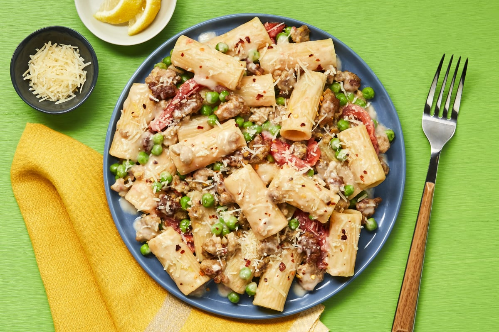

Chicken Sausage Rigatoni Napoletano

Chicken sausage rigatoni pasta with peas, chili flakes & creamy garlic sauce
This tasty pasta recipe is sure to leave you full. The creamy garlic sauce is full of flavor and the red pepper flakes add a nice kick!
Ingredients
- 1 Roma Tomato
- 1 Clove of Garlic
- 1 Lemon
- 6 oz Rigatoni Pasta
- 4 oz Peas
- 9 oz Italian Chicken Sausage Mix
- 1 TBS Chili Flakes
- 4 oz Cream Base Sauce
- 1/4 Cup Parmesan Cheese
- 1 TBS Olive Oil
- 1 TBSP Butter
- Kosher Salt
- Pepper
Steps
- Prep
- Bring a large pot of salted water to a boil. Wash and dry all produce.
- Cut tomato into ½-inch-thick wedges. Peel and finely chop garlic. Zest and quarter lemon.
- Cook Pasta & Peas
- Once water is boiling, add rigatoni to pot. Cook until al dente, 9-11 minutes.
- In the last 2 minutes of cooking, reserve ¾ cup pasta cooking water, then add peas to same pot and cook until tender. Drain.
- Cook Sausage
- Meanwhile, heat a drizzle of olive oil in a large pan over medium-high heat. Add sausage and cook, breaking up meat into pieces, until browned, 3-5 minutes (it'll cook through later). Season with salt and a pinch of chili flakes.
- Start Sauce
- Add tomato and garlic to pan with sausage. Cook, stirring occasionally, until tomato is slightly softened, 1-2 minutes.
- Cut top off carton of cream sauce base to open fully; pour contents into pan. Using a spoon or spatula, scrape any remaining sauce from carton into pan.
- Finish Sauce
- Pour in ¼ cup water. Bring to a simmer and cook until sauce is slightly thickened and sausage is cooked through, 2-3 minutes. Reduce heat to low.
- Stir in half the Parmesan (save the rest for serving) and 1 TBSP butter until melted.
- Add lemon juice and lemon zest to taste. Season with salt and pepper.
- Finish & Serve
- Add drained rigatoni and peas to pan with sauce; toss to coat. If needed, stir in reserved pasta cooking water a splash at a time until everything is coated in a creamy sauce.
- Divide pasta between bowls and top with remaining Parmesan and a pinch of chili flakes if desired. Serve with any remaining lemon wedges on the side.